警告
Azure Container Service 已經成 Azure Kubernetes Service，這篇已經棄用
新文章請參考這篇
前言
Azure Container Service 一直是小弟想找時間好好玩的一個 Azure 服務，從今年年初提到的 DC/OS ，到上個月分享的 Kubernetes，老實說，都是個非常好玩，且強大的服務，但今年 ( 其實從去年 ) 就一直忙碌到現在，所以也變成沒有充裕的時間可以好好的來寫一下這方面的文章：而在這次又因為要上課，所以想說，就在把安裝過程記錄一下，不然老實說，這個過程還滿多眉眉角角的：舉例來說，一開始，可能要先去 AD 註冊應用程式 ( Kubernetes 要求.. )，為了安全性，可能只會提供這個 Resource Group 的使用權，然後要設定 SSH Key ，最後才能進入服務的啟用…
所以，其實還滿多東西要處理的，好吧，廢話不多說，就此開始吧！
使用 AZ 快速設定
在開始前，如果您真的不想用 UI 操作，那一堆設定，官方網站也提供了快速建立初期步驟的一些流程：而小弟這篇，則會使用 UI 的操作方式來建立。
設定 Resource Group
首先，我們要先建立一個空的 Resource Group：雖然，我們可以在建立 ACS ( Azure Container Service ) 的過程中，順便建立 Resource Group，但我們這邊為了讓流程順一點，我們就先來建立一個空的 Resource Group 吧。
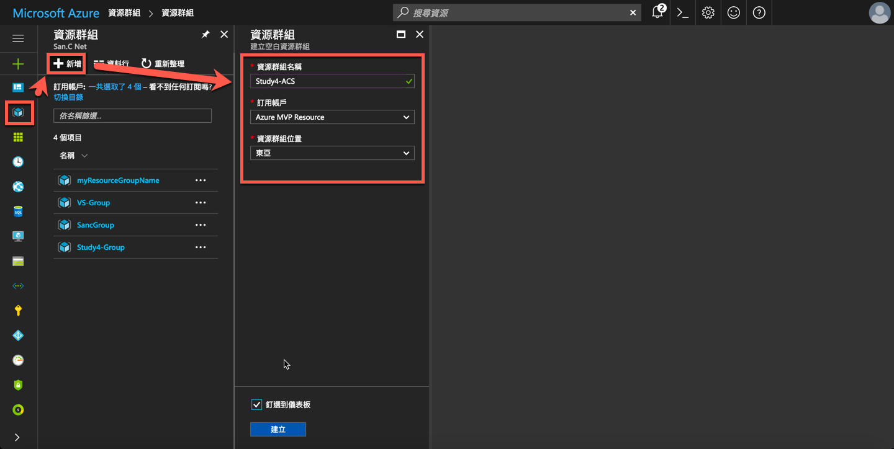
這樣就完成第一步驟。
設定 AD 應用程式註冊
完成第一步驟後，我們接下來要設定 AD 的 應用程式註冊，在使用 ACS Kubetnetes 之前，Kubetnetes 需要我們提供 AD 應用程式註冊的相關資訊，所以我們必須先完成此事。
首先，我們需要新增一個新的應用程式註冊。
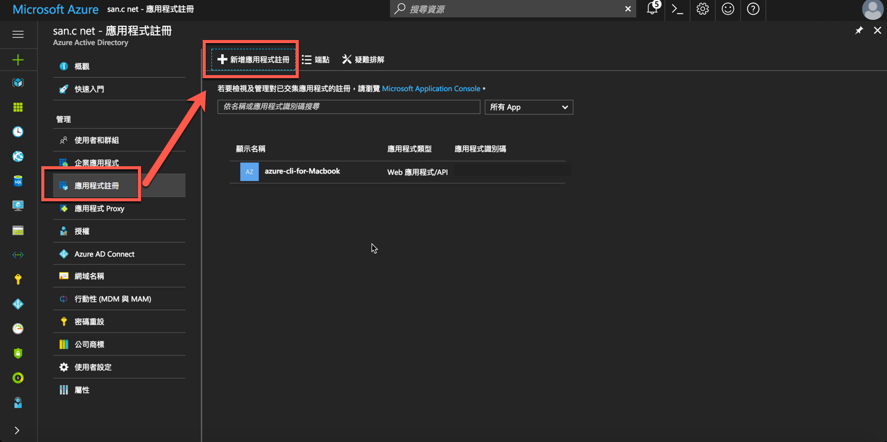
這邊填入相關資訊，其中在這邊，登入 URL 只是一個識別，可以隨意填，不用真的是一個網址。
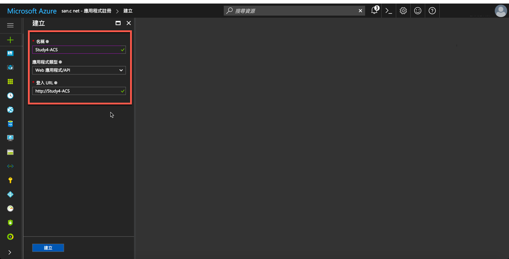
新增完成後，我們可以進行一些微調 ( 這邊微調的用意，只是希望能和官方的 Script 產生出來的結果一樣 )
基本上，我們用不到回覆 URL 所以可以直接砍掉。
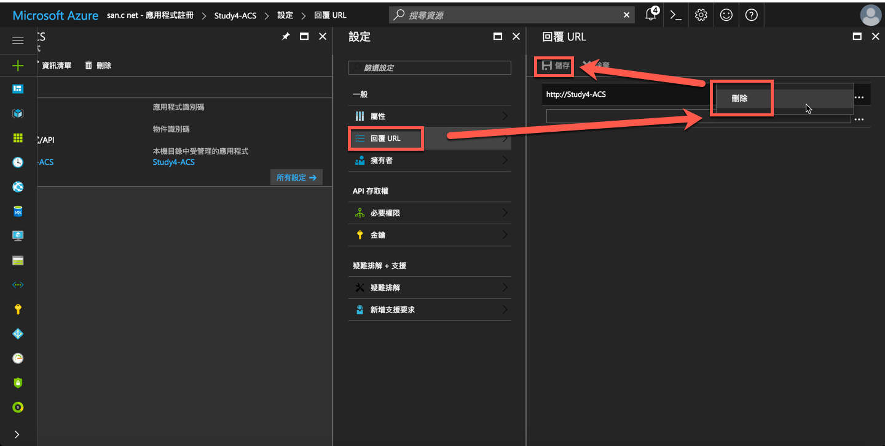
接下來，我們要產生此帳號的金鑰，名稱和有效期限可以隨意，按下儲存後，就會產生出金鑰，這個金鑰到時候會需要用在 ACS 的建立中，所以請複製下來：如果沒複製下來，離開此頁後，就再也看不到了 XDD
( 當然，可以砍掉重新建立一個也是可以低~ )
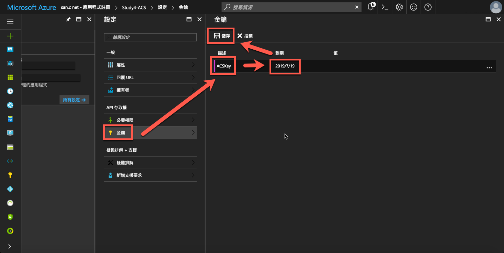
最後，回到屬性頁，我們可以調整一下應用程式識別碼 URI，雖然不調整也是可以，但調整一下，未來會比較清楚這是拿來做啥的。
另外，特別重要的地方是黃色框框的應用程式識別碼，這個也請複製下來，雖然不回不見，但等下建立 ACS 的時候，會比較方便。
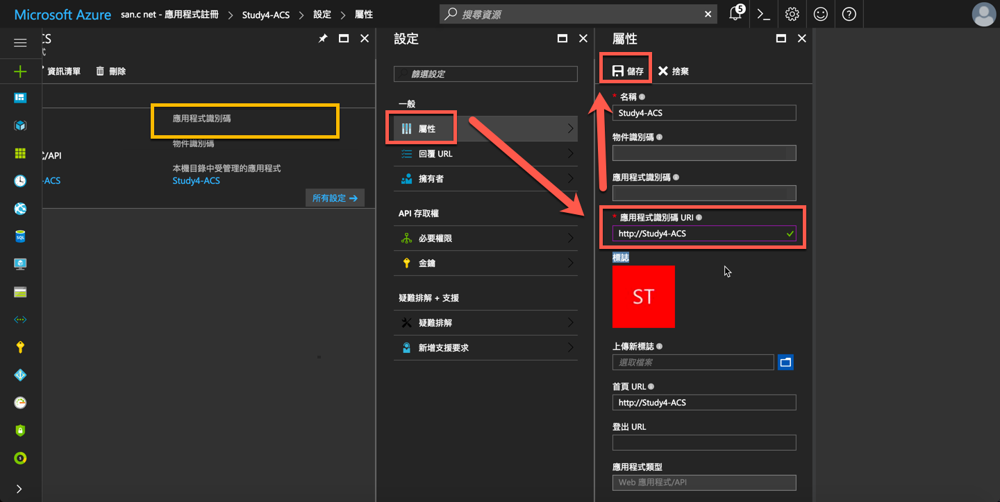
接下來，回到資源群組 Resource Group，我們要把剛剛建立的帳號，授權可使用此資源群組ㄌ。
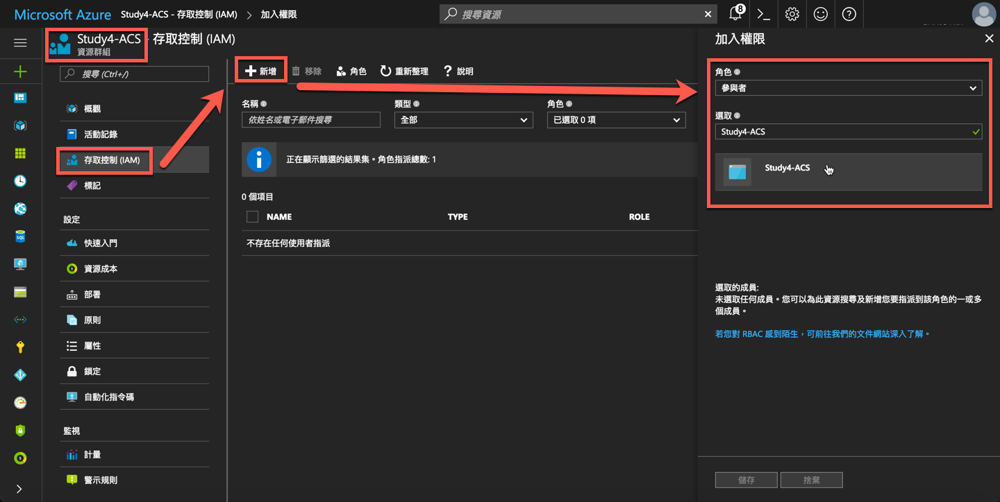
完成如下。
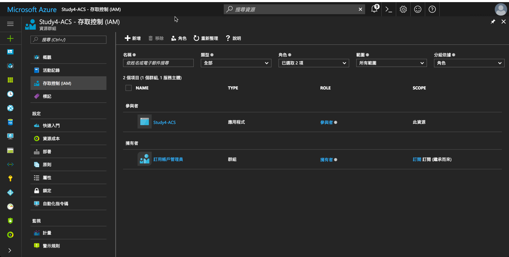
到此，就完成了 AD 應用程式註冊應用程式註冊的部分。
建立 ACS Kubernetes
接著，我們就要開始建立 ACS 了，如下圖，我們可以從這邊新增
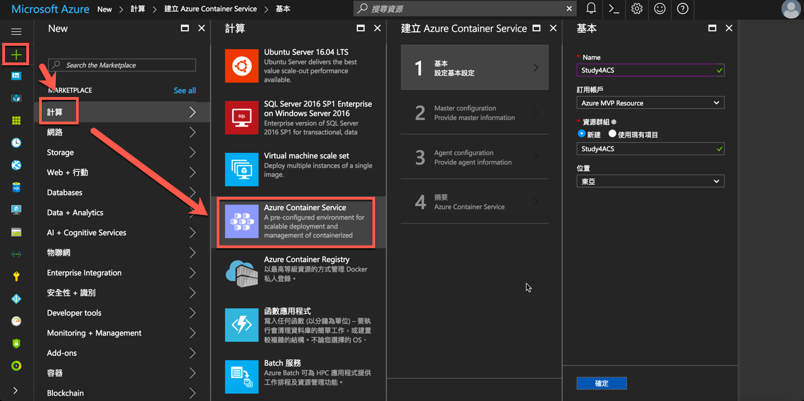
首先，第一頁的選項，如下，記得資源群組要選擇剛剛建立的。
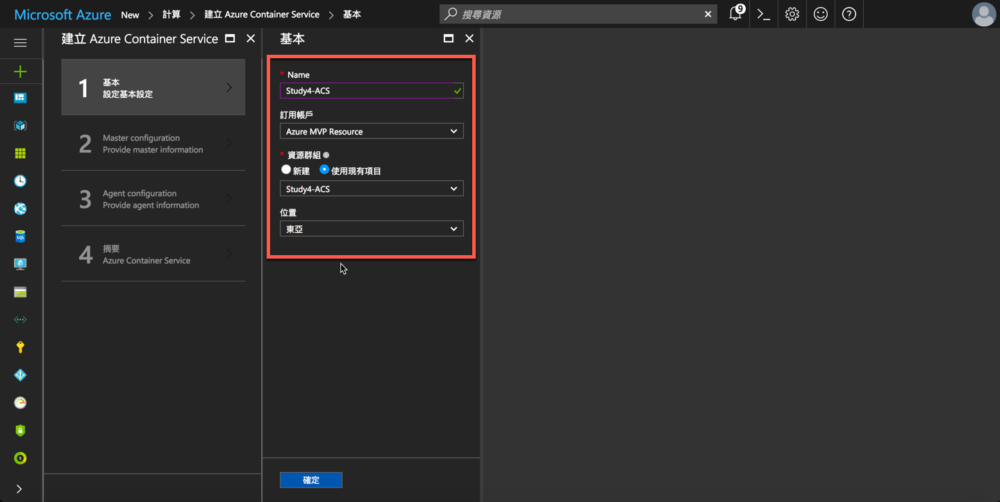
接下來，Orchestrator 我們選擇 Kubernetes，當然，ACS 不只支援 Kubernetes，也支援 DC/OS 等，但小弟這邊與未來的文章，目前基本上是專注於 Kubernetes ( DC/OS 表示 … )，所以小弟我這邊就選擇 Kubernetes。
Dns name prefix 表示網址的前置詞，這邊就使用 study4，未來就會以 study4 為開頭的網址。
接下來要輸入 User Name 和 SSH Public Key。
如果沒有 SSH Public Key 的朋友，可以參考這篇，裡面的中間，有提到做法可以產生 Key。( 上面有不同平台可以選擇 )
而 Public Key 的預設位置在 ~/.ssh/id_rsa.pub
Mac 和 Linux 就是家目錄的隱藏資料夾。
如果是 Windows 就是帳號目錄底下隱藏資料夾。
我們只需要把 id_rsa.pub 打開，並且貼到 Azure Portal 即可。
接下來，就是把剛剛我們黃色框框的內容，貼到 Service principal clientID。
把剛剛在 AD 應用程式註冊產生的金鑰貼到 Service Principal client secret。
最後，可以選擇要開幾台 Master，如果怕掛，就多開幾台，但就是要多收幾倍的錢 XDDD
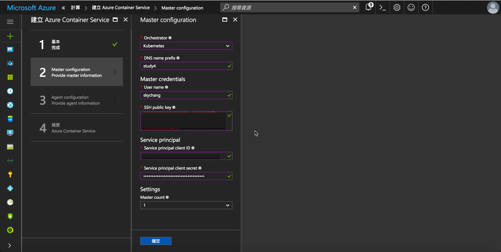
到下一頁後，我們可以選擇要幾台 Agent，和 Master 不同，Master 是控管整個 Kubernetes 環境的機器，而 Agent 則是提供放置 Docker ( 我們開發的應用程式的環境 )。
然後可以選擇要哪種規模的 Agent。
最後，再選擇是要 Windows 還是 Linux，當然，這就會牽扯到，Docker 是要運行在 Windows 上，還是 Linux 上。
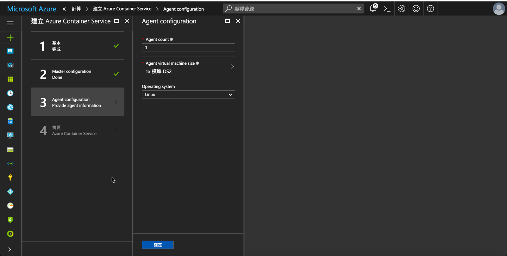
完成後，按下確認，就可以開始進行部署了。
下篇，會開始討論，如何操作與控制 ACS Kubernetes。
後記
雖然整篇的建置看起來很簡單，但在第一次建置的時候，其實還遇到滿多麻煩的，再加上官方文章其實也是跳來跳去，所以小弟就在這邊整理了一下整個流程，希望對大家有幫助嚕!..
P.S ACS 的服務不便宜，所以請作量使用….
參考資料
- https://docs.microsoft.com/zh-tw/azure/container-service/container-service-kubernetes-service-principal
- https://docs.microsoft.com/zh-tw/azure/container-service/container-service-deployment
- https://docs.microsoft.com/en-us/cli/azure/ad/sp
- https://docs.microsoft.com/zh-tw/azure/container-service/container-service-kubernetes-walkthrough
- https://skychang.github.io/2015/10/19/Hexo-Source_Control_and_Deploy/